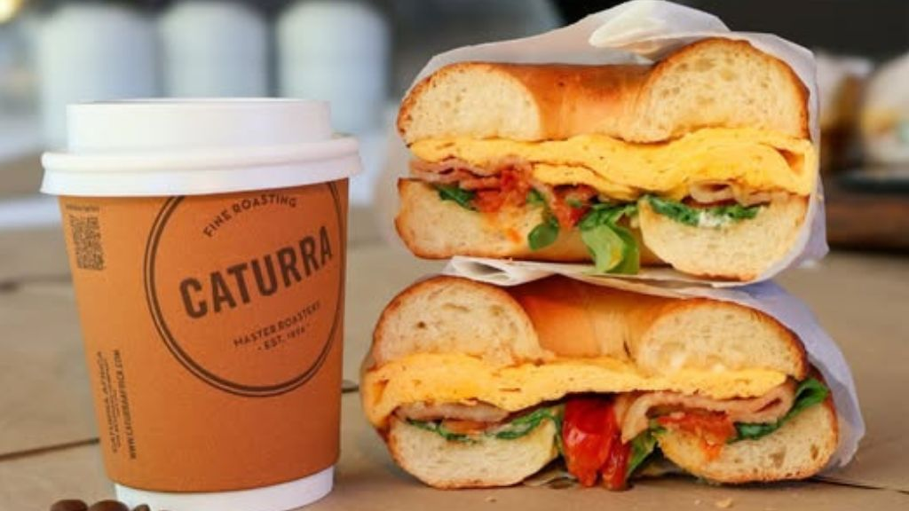
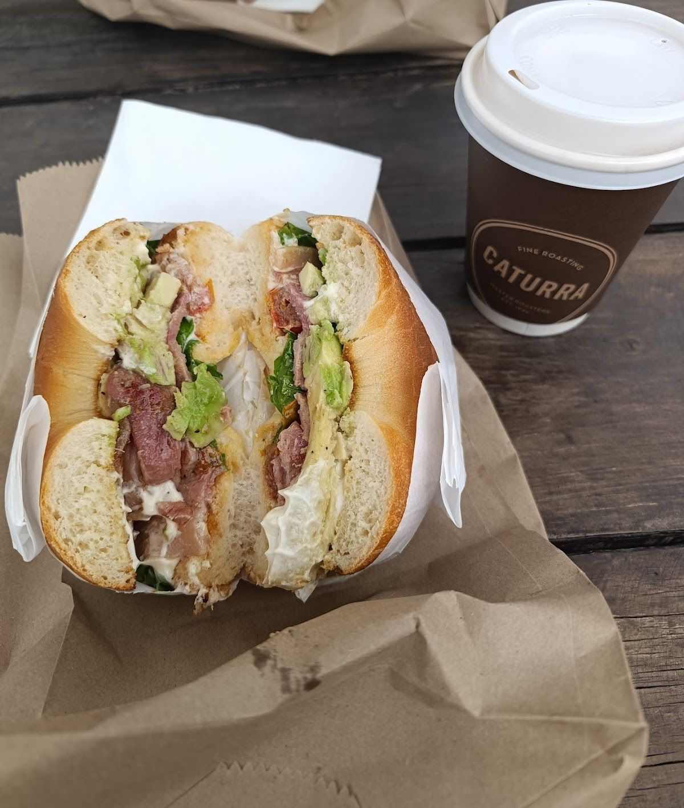
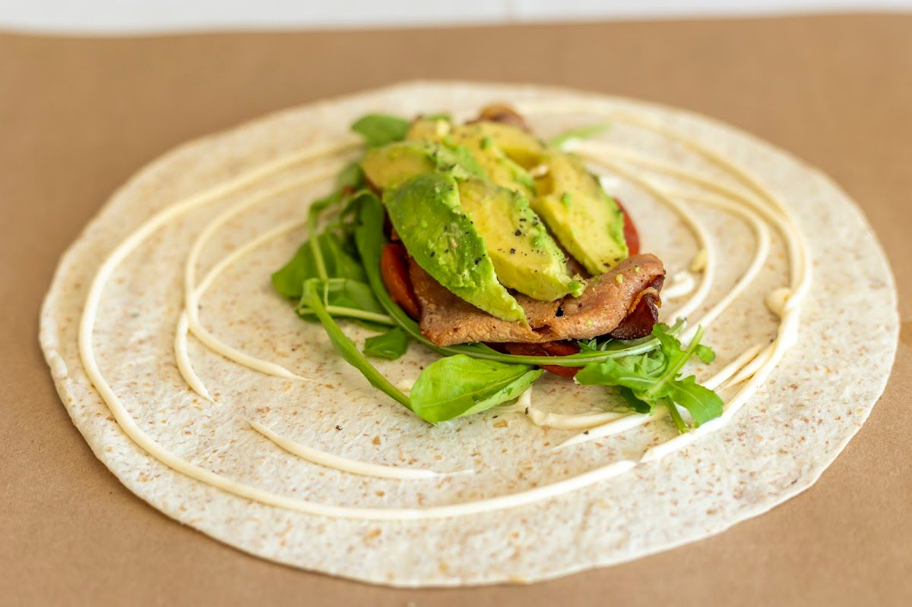

Experience the magic of Hout Bay with delightful food and stunning views.
Contact UsBagel & Fox Drive-Through is your local Hout Bay street cafe, offering a unique blend of delicious food, incredible views, and a welcoming atmosphere for both humans and their furry friends. We serve the community with passion and dedication, inviting everyone to enjoy the fresh air and friendly service.
Our story began with a vision to create a place where people could gather, relax, and enjoy quality food and beverages. Nestled in the beautiful setting of Hout Bay, our cafe offers a perfect escape from the hustle and bustle of city life. Whether you're driving through or sitting down with us, our team is dedicated to making your experience memorable.
At Bagel & Fox, we believe in the power of community and the joy that a simple meal can bring. Our promise is to deliver a consistently delightful experience, with fresh ingredients, a warm atmosphere, and a little bit of magic in every bite. We invite you to come and taste the difference.
Discover our range of delicious offerings, crafted to satisfy your cravings and warm your soul.
Relish in our expertly brewed coffee, made from the finest beans, providing the perfect caffeine boost for your day.
Enjoy our freshly baked bagels, topped with your choice of delicious spreads and fillings, guaranteed to satisfy.
Indulge in our creamy milkshakes, available in a variety of flavors, providing a sweet treat for all ages.
"Bit late to the party, but wow was I glad that I came! Awesome staff, they’re so friendly. Coffee is top tier and the bagel so fresh and generous."— René Basson, ★★★★★
"Bit late to the party, but wow was I glad that I came! Awesome staff, they’re so friendly. Coffee is top tier and the bagel so fresh and generous."— René Basson, ★★★★★
"Quite cute and original. Delicious bagels, burger bagels, coffee and milkshakes while giving you the option between drive through or sit down."— Carlo Kuhn, ★★★★
"I have never been to a drive thru that wasn’t for fast food and was pleasantly surprised ☺️ the pictures online seemed a bit sketchy but it’s actually super cute based in a small property in a public road so not hidden at all. The bagels were super fresh and the AVO was AMAZING(need to know where they got it). The staff were also really sweet and we only waited like 5 minutes for all our food and coffees."— Tracey, Lee Boltman, ★★★★★
"Sadly for me they had issues with water main, so I missed out on my flat white, but heir bagels were absolutely amazing! Once back in SA, I will definitely visit again"— Kristi Malan, ★★★★★



We'd love to hear from you — reach out to us anytime.